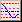
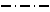
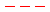
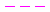
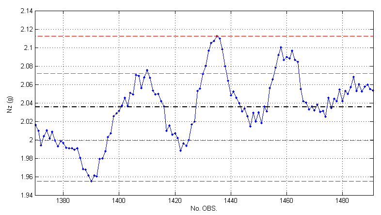
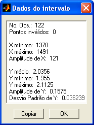
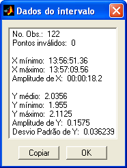
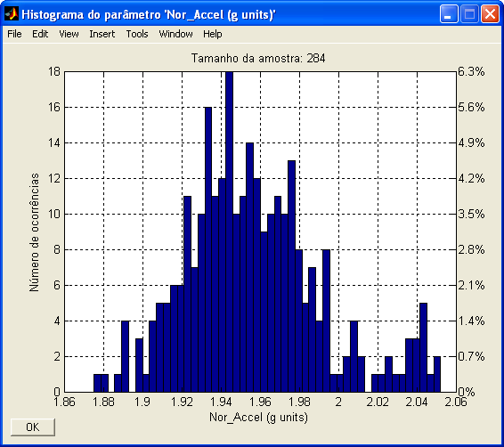

| Menu Dados |
|
Estatística
do Intervalo
Essa função
apresenta ao usuário alguns dados estatísticos
importantes do parâmetro selecionado em y.
Os dados são
referentes apenas ao intervalo selecionado
(intervalo visível no gráfico).
- Selecione em y o
parâmetro que deseja analisar e em x um parâmetro de referência.
- Defina o intervalo
de análise, limitando-o à parte visível do gráfico.
- Clique no menu “Dados ► Análise de dados
... ► Estatística
do intervalo” ou no botão 
Serão
apresentadas, no gráfico, linhas auxiliares indicando
os seguintes dados:
|
Linha |
Descrição |
|
 |
Valor médio da
amostra |
|
 |
Valor máximo e
mínimo da amostra |
|
 |
Desvio padrão
da amostra em torno da média |

Adicionalmente,
será apresentada uma janela com dados
estatísticos detalhados, que podem ser copiados para a Área de
Transferência do
Windows.
Caso o
parâmetro x seja reconhecido
como tempo e a opção “Mostrar
tempo como HH:MM:SS”
esteja marcada no meu “Opções”, os dados
relativos ao parâmetro x serão apresentados no formato de tempo.
 
Histograma
do Intervalo
Essa função
apresenta ao usuário um histograma dos dados do
parâmetro selecionado em y.
Os dados são
referentes apenas ao intervalo selecionado
(intervalo visível no gráfico).
- Selecione em y o
parâmetro que deseja analisar.
- Defina o intervalo
de análise, limitando-o à parte visível do gráfico.
- Clique no menu “Dados ► Análise de dados
... ► Histograma
do intervalo” ou no botão  na
Barra de Ferramentas.
na
Barra de Ferramentas.
Será
apresentada uma janela com o histograma da amostra, ilustrando
a distribuição das ocorrências da amostra em cada subintervalo (célula
do
histograma). O número de ocorrências é apresentado no lado esquerdo e a
porcentagem das ocorrências no lado direito. Também é apresentado o
tamanho da
amostra.

Para alterar o
número de células do histograma, clique em
“Células do histograma...” no menu
“Opções” e insira o
valor desejado.
Essa definição
será lembrada pelo R_DAT nas sessões
subsequentes.
| |
Análise
de dados |
Validade de y
como tempo |
|